特色旅游
1日游
2-4日游
5-10日游
精品长线旅游
地址：匈牙利 布达佩斯 Budapest-Keleti, 1087
电话：0036-30-9574162
邮件：rrjourneys@gmail.com
网站：http://www.rrjourneys.com
【美景】
乌日霍罗德是乌克兰西部的城市，与斯洛伐克和匈牙利接壤； 斯特瑞在十七世纪下半叶被称为“自由皇家城市”； 利沃夫是乌克兰第七大城市，老城区被列入联合国教科文组织世界遗产名录； 伊万诺•弗兰科夫斯克在一战期间，设了几个月的西乌克兰首都； 库尼贡达湖被公认为乌克兰的七大自然奇观之一； 万诺赫尔迪夫是重要的葡萄酒产区，曾居住着皇家朝廷的酿酒师。
【美食】
野鸡肝酱 猪肉香肠 烤猪肉串 巧克力酱三文鱼 奶油海虹 红菜汤 樱桃馅饼 饺子蘸酸奶 素鱼子酱Игра
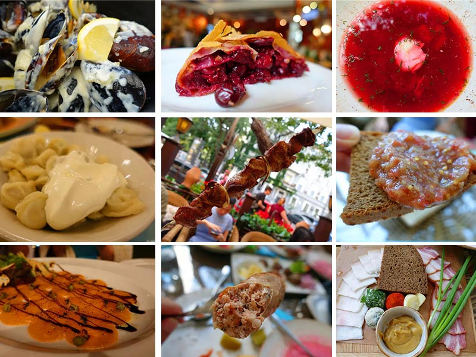
乌克兰
具体行程：
DAY1：布达佩斯-乌日霍罗德
入住地点：乌日霍罗德
乌日霍罗德是乌克兰外喀尔巴阡州的首府，位于乌日河畔，是乌克兰西部的城市，与斯洛伐克接壤，与匈牙利接壤，面积31平方公里，人口111,300人（2004年）。这座城市几乎位于距离最近的三个海域相同的距离内：波罗的海，亚得里亚海和黑海（650-690公里）。 该城市的历史名称来自匈牙利语，并自20世纪开始一直使用，最早的城市创始人中最著名的是斯拉夫人。匈牙利于公元895年征服该地，以其首领阿帕德为首的匈牙利部落冲进了洪瓦尔堡垒。 1945年6月29日，乌克兰喀尔巴阡山脉被苏联吞并，并成为乌克兰的最西端。那一年，乌日霍罗德州立大学（现为乌日霍罗德国立大学）也成立了。 2002年，捷克斯洛伐克第一任总统汤玛斯•马萨里克的半身像在该市的一个主要广场上亮相。1928年捷克斯洛伐克独立十周年之际，也曾出现过类似的半身像，但匈牙利人在1939年占领该地区时将其拆除。
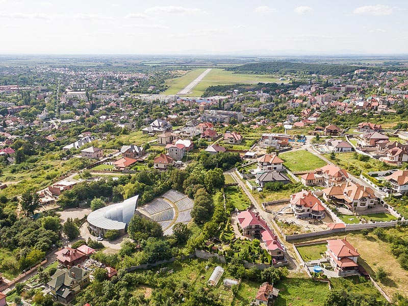
景点：乌日霍罗德城堡 乌日霍罗德城堡建于13至18世纪，融合了各种建筑风格和材料，在匈牙利历史上占有重要地位。城堡遗址上最早的石制建筑可以追溯到13世纪。匈牙利的查理一世将城堡遗址授予了他来自布鲁斯家族的意大利支持者，他们竖起了带有菱形堡垒的矩形防御结构，让人联想起意大利南部的城堡。这座防御工事在16世纪和17世纪得到了加强，防御了多次围攻（弗朗西斯二世•拉科奇在1703-04年进行了最后一次围攻），但从未被攻破过。在18世纪，在法国军事工程师勒梅尔的监督下进行了现代化改造。 随着该地区对军事要塞的需求下降，哈布斯堡王朝自治区进一步向东扩展，城堡被移交给了鲁塞尼亚希腊天主教教会，该教会在那里开设了一所学校。 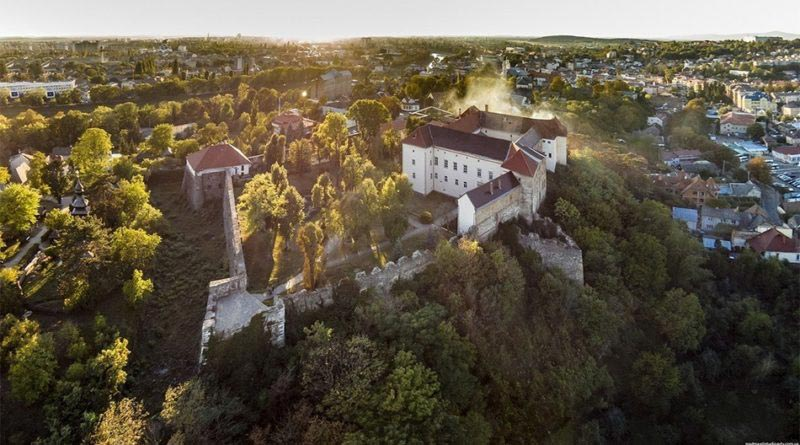
景点：犹太教堂 犹太教堂大楼建于1904年7月27日，建筑是一个华丽的浪漫风格和大胆地间杂拜占庭复兴和摩尔复兴建筑元素。自第二次世界大战以来，这座建筑一直是乌日霍罗德的音乐厅，因其声学效果而倍受赞誉。它已经与横贯喀尔巴阡民间合唱团一起成为了地方爱乐协会的所在地。尽管从2012年起，犹太人的所有符号都已从建筑物中删除，但外墙上有一块牌匾，用以纪念扎卡帕蒂亚州的85,000名犹太人，他们在大屠杀中被谋杀。现在有恢复带有马赛克的玻璃穹顶的计划。 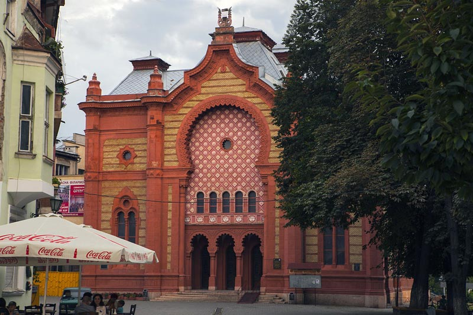
景点：徽章及火车站 乌日霍罗德的徽章象征着该地区重要的文化和经济因素：葡萄栽培。
火车站被用作斯洛伐克-乌克兰边境的货运港口。铁路边境检查站是海关的一部分，该综合大楼于2004年10月向公众开放，它坐落在乌日霍罗德的赫尔希•柯帕广场上。
乌日霍罗德火车站的前建筑建于20世纪初期。2002年，乌克兰内阁决定建立一个新的大型现代化火车站。工程于2003年开始。2004年10月，乌克兰总理 维克多•亚努科维奇和乌日霍罗德市市长维克多•波霍列洛夫向公众开放了新的火车站。
景点：希腊天主教大教堂 乌日霍罗德的圣十字大教堂是希腊天主教大教堂穆卡切沃的主教管区，它致力于提升圣十字。巴洛克式教堂是根据耶稣会士的要求于1646年由布鲁斯贵族家庭捐赠的资金建造的。在拉科奇的独立战争期间，它遭受了一些破坏，后耶稣会在1773年被抑制，皇后玛丽亚特里萨允许希腊天主教徒占有建筑物。于1848年根据拉斯洛•法布里的新古典主义设计进行了翻新。
在苏联时期（1945-1991年），该建筑移交给俄罗斯东正教教堂。1991年10月10日，希腊天主教堂合法化并恢复原貌后，大教堂又归还给了穆卡切沃希腊天主教大公国。 教堂具有巴洛克风格的典型特征。内部具有典型的洛可可元素。后来适应了拜占庭仪式的需要。寺庙的圣障建立于1799年。在1877年它是在新古典主义建筑风格影响下重建，并接受其目前的外观
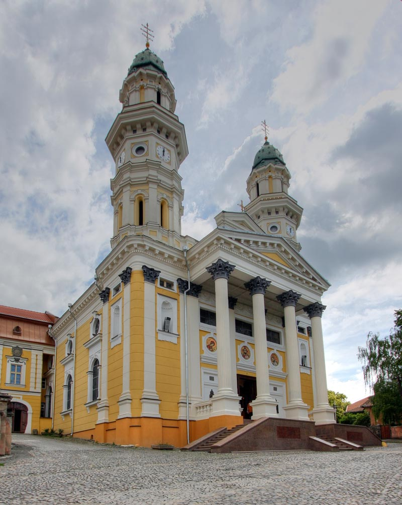
DAY2：乌日霍罗德-斯特瑞-利沃夫
入住地点：利沃夫
斯特瑞是利沃夫地区一个城市，是乌克兰西部最大的交通枢纽之一，是利沃夫地区重要的经济和文化中心，它位于斯特里亚河的左岸，全市人口6万人，面积17平方公里。 这座城市的首次提及可以追溯到1385年，那时这座城市仍被认为是该教区的中心。在十七世纪下半叶，斯特瑞经济强劲增长，前市长促进了城市的发展，后来英联邦国王扬•索比斯基也促进了该城市的发展。那个时候，这座城市被称为“自由皇家城市”。 波兰第一次分区后，哈布斯堡帝国和奥匈帝国先后统治了这座城市。随着第一次世界大战的开始，史特瑞成为了乌克兰锡克步枪兵团的创始地。在十九世纪中叶，这座城市成为重要的铁路和天然气中心，这促进了城市的快速发展。根据1939年的《莫洛托夫-里本 特罗普条约》，斯特瑞被苏联吞并。 1990年3月14日，在乌克兰第一个城市斯特里，树起了国家标志-乌克兰国旗。在2003，这个城市被确认为利沃夫地区最好的地区中心 。 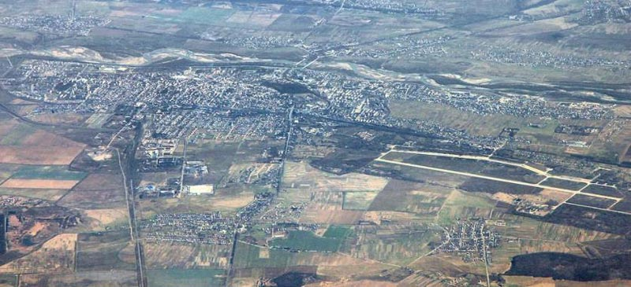
景点：圣母守护教堂 圣母守护教堂在斯特瑞最好的没有被毁坏的教堂之一，这座城市的象征，建于1425年，火灾后幸存和后来进行一些改建。
DAY3：利沃夫
入住地点：同一地点
利沃夫是乌克兰西部的主要城市，有狮城之称，利沃夫州首府，是乌克兰西部最大的城市，也是乌克兰全国第七大城市，人口724,713（2019年），其中乌克兰人占88%，俄罗斯人占8%，波兰人占1%，另外每天有20万人从郊区进城上班。 该市是乌克兰西部主要的工业与文化教育中心，拥有许多大型工厂、乌克兰最古老的大学和著名的利沃夫歌剧与芭蕾舞剧院。利沃夫的旧城区拥有许多珍贵的建筑，已被列为世界文化遗产。利沃夫是乌克兰民族文化的中心都市。利沃夫市内也有着众多的剧场和博物馆。 1772年，在对波兰进行第一次分区之后，这座城市成为哈布斯堡王朝加利西亚和洛多梅里亚王国的首都。1918年，在很短的时间内，它是西乌克兰人民共和国的首都。两次大战之间，这座城市是利沃夫省在波兰第二共和国。1939年德国苏维埃入侵波兰后，利沃夫成为苏联的一部分，并且在1944–46年间波兰与苏维埃乌克兰之间进行了人口交换。1991年，它成为乌克兰独立国家的一部分。 在行政上，利沃夫市是利沃夫州的行政中心，具有重要的州地位。这座城市的历史中心，以其古老的建筑和鹅卵石街道，在第二次世界大战期间幸免于苏联和德国的占领。这个城市有很多行业和机构的高等教育，如利沃夫大学和利沃夫理工学院。利沃夫还是许多文化机构的所在地，包括爱乐乐团和利沃夫歌剧和芭蕾舞剧院。
景点：利沃夫老城 利沃夫的老城区是这个城市的历史中心，1975年确认为国家建筑保护区。自1998年以来，联合国教科文组织将利沃夫的历史中心列为“世界遗产”的一部分。1998年12月5日，世界遗产委员会第22届会议在京都（日本）召开期间，将利沃夫列入联合国教科文组织世界遗产名录。
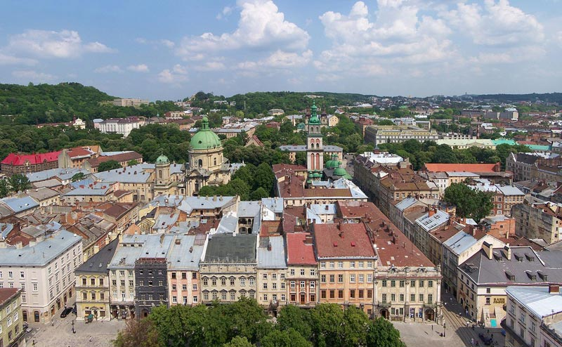
景点：利沃夫歌剧和芭蕾舞剧院 尼卡利沃夫国立大剧院和利沃夫歌剧院是乌克兰西部最大这座城市及其历史文化中心之一。利沃夫歌剧院最初建在淹没的波尔特瓦河的前沼泽地，现在位于自由大道的尽头，这是利沃夫历史悠久的老城区的绿树成荫的核心，老城区是联合国教科文组织列为 世界遗产的哈里奇区。 根据剧院大厅的铭文，该建筑始建于1897年至1900年之间，在历史的沧桑中一直屹立不倒。最初建在利沃夫是首都加利西亚的自治省的奥匈帝国。在苏联统治期间，入口的地方会经过一个高耸的列宁雕像。这座剧院被誉为利沃夫州立歌剧和芭蕾舞学术剧院，长达40年之久。
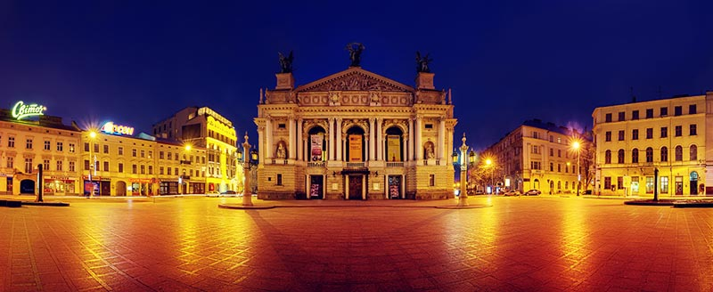
景点：集市广场（中心广场） 集市广场是利沃夫城市的中心广场，根据考古数据，该广场是在13世纪下半叶加利西亚亲王列奥一世统治期间规划的。广场为矩形，尺寸为142米x 129米，中间有一排房屋，其南墙由市政厅建造。1825年市政厅的塔楼被烧毁时，所有相邻的房屋都被拆除，建筑师于1835年建造了一座新的带有65米塔楼的大厅。 在广场周围，有44栋房屋，代表着文艺复兴到现代主义的几种建筑风格。在四个角落，有喷泉-建于1793年。1998年，集市广场与历史悠久的利沃夫市中心一起被公认为联合国教科文组织世界遗产。 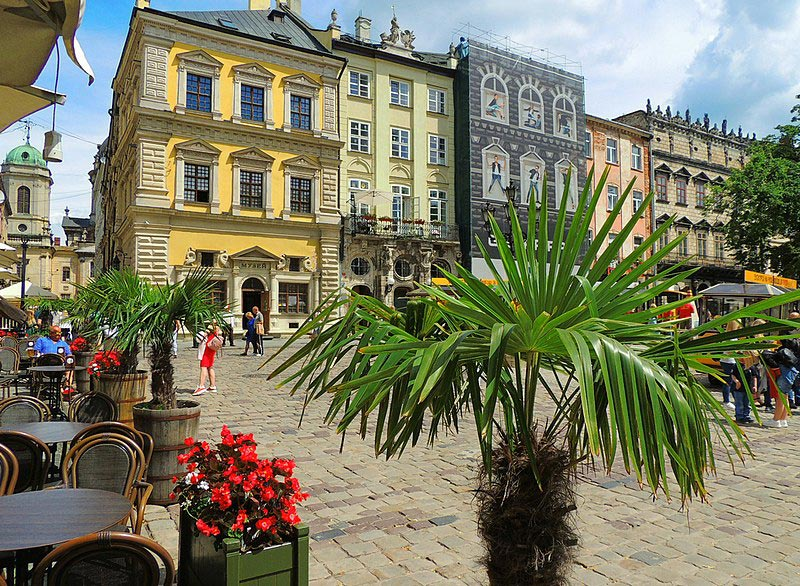
景点：波托茨基宫 波托茨基宫是利沃夫的一座宫殿建筑，修建于1880年代，曾是奥地利总理波托茨基的住宅。苏联时期，这座宫殿被收归公有。1972年时，宫殿被用来举办婚礼，后来得到了修复。在2000年代，乌克兰总统曾将这里作为自己的寓所。
DAY4：利沃夫-伊万诺•弗兰科夫斯克
入住地点：伊万诺•弗兰科夫斯克
伊万诺•弗兰科夫斯克位于乌克兰的西部且是州的首府，2004年时人口约有204,200人。1962年时为了纪念乌克兰作家伊万•弗兰科而改为伊万诺-弗兰科夫斯克。 它建于17世纪中叶，曾是波兰波托基家族的要塞，在1772年波兰的第一次分区中被哈布斯堡帝国吞并了，之后被奥地利帝国占有。 第一次世界大战期间，这里设了几个月的西乌克兰人民共和国临时首都，之后又成为第二波兰共和国的一部分。二战期间，城市被苏联吞并，随着1944年苏维埃乌克兰的解放和边界的变动，共产党政权在接下来的四个半月内对该城市进行了统治。苏联解体前的几年，这座城市升起了蓝黄色的旗帜，象征着独立的乌克兰。 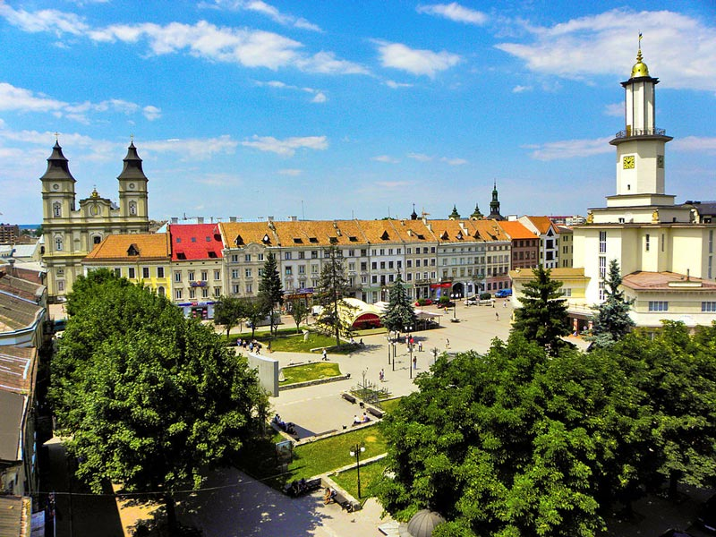
景点：市政厅 市政厅的第一座建筑于1772年以文艺复兴后期的风格建造，一座九层高的圆形堡垒建筑，位于一个石头基座上（于1695年至1870年重建）。 市政厅大楼位于市中心的市场广场，是乌克兰为数不多的市政厅之一，以带有艺术装饰元素的建构主义风格建造。 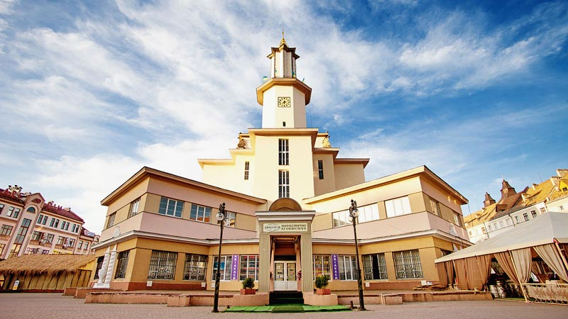
景点：圣母玛利亚牧师教堂 圣母玛利亚学院教堂之前是罗马天主教会，后来教堂的房屋被伊凡诺•弗兰科夫斯克地区艺术博物馆使用，这座神庙位于谢泼斯基广场。钟楼建于1744年，重达2吨以上，在1963年被摧毁。在2000年，它才根据旧照片和图纸得以重建。 现在是圣母玛利亚大学教堂，是该市唯一的宗教建筑， 1965年，这里设有一个地质博物馆，在1980年对该建筑进行修复后，本地区艺术博物馆对外开放，在那里展出该地区的民间和神圣艺术品的样本。 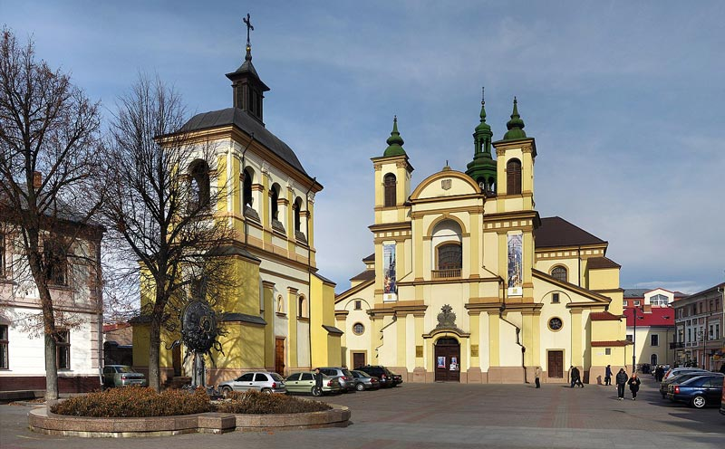
景点：基督复活大教堂 基督复活大教堂属于乌克兰希腊天主教大主教，这座神庙位于谢泼斯基广场。 18世纪初，耶稣会士出现在斯坦尼斯拉夫市（今伊万诺•弗兰科夫斯克）。1720年，在被土耳其人烧毁的教堂遗址上，耶稣会学院托马斯•泽伦斯基的校长开始筹备建造新教堂，并于1729年建成。 在苏联时期，乌克兰希腊天主教教堂被废除，圣殿失去了大教堂的地位，1990年1月28日恢复了乌克兰希腊天主教堂的地位，并于1995年和2003年对圣殿进行了修复。
DAY5：伊万诺•弗兰科夫斯克-库尼贡达湖
入住地点：库尼贡达湖附近
库尼贡达湖是位于乌克兰西部喀尔巴阡州的湖泊，处于捷列布利亚河上游，面积0.07平方公里，海拔高度989米，平均水深8.1米，最大水深24米。是乌克兰境内喀尔巴阡山脉的最大的湖。它是国家自然保护区的一部分，该自然保护区成立于1989年。科学家们估计，该湖大约在一万年前形成。2008年，该湖被公认为乌克兰的七大自然奇观之一。
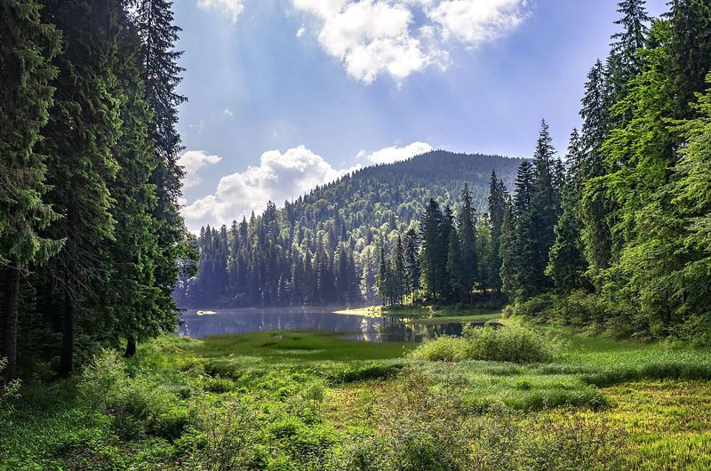 该湖位于国家自然公园西北部，靠近1,495米高的奥塞纳山山麓，海拔989米。该湖是在冰河时代后（约一万年前）创建的，这是由于强烈的地震引起的原生砂岩从南克拉斯纳山山坡的构造运动而形成的，该山脉阻塞了狭窄的溪谷。它的水流过多孔的天然大坝，并返回到湖泊西面350米处的表面，比湖泊平均水位低60米。 该湖主要由两条小溪所充满。流域中的水位不断变化：在阵雨和强雪融化时，水位会增加，而在冬季和干旱季节，水位会下降。所以该湖的水位在4至4.5米之间波动，其面积在4.5至7.5公顷之间变化，最大深度在18至23.5米之间变化。 据说，湖周围的森林已有140至160年的历史。湖中央有一个很小的岛，面积为几平方米，被称为海眼，该岛已被淹没了一段时间。
DAY6：库尼贡达湖-万诺赫尔迪夫-布达佩斯
入住地点：返回布达佩斯
万诺赫尔迪夫是位于乌克兰西部的城镇，由喀尔巴阡州负责管辖，是维诺吉拉季夫区的首府，始建于1262年，面积32平方公里，2013年人口25,565，人口密度每平方公里797人。匈牙利称它为大葡萄园，源于该地区是重要的葡萄酒产区。 该镇是最古老的镇之一，曾居住着皇家朝廷的酿酒师。1329年，匈牙利国王查尔斯•罗伯特授予该镇特权。1717年，该镇的大部分公民被入侵的塔塔尔杀害。到1880年，人口约为4,400（有500个罗马尼亚原住民）。1881年，一所中学开始开课。 1944年，这座城市有犹太人居住区。在特兰西瓦尼亚北部这一段的时期，犹太人大部分被驱逐到奥斯威辛集中营，抵达后不久即被毒死，从1944年5月至1944年6月，该地区的犹太人通常在被驱逐出境之前，在贫民窟里待了大约两个星期，许多家庭被安置在一个房间里，情况变得极为拥挤，这是故意造成痛苦和疾病的安排。 1944年，被苏联占领，并于1946年最终成为苏联的一部分。自1945年12月起，当地报纸就在这里出版。
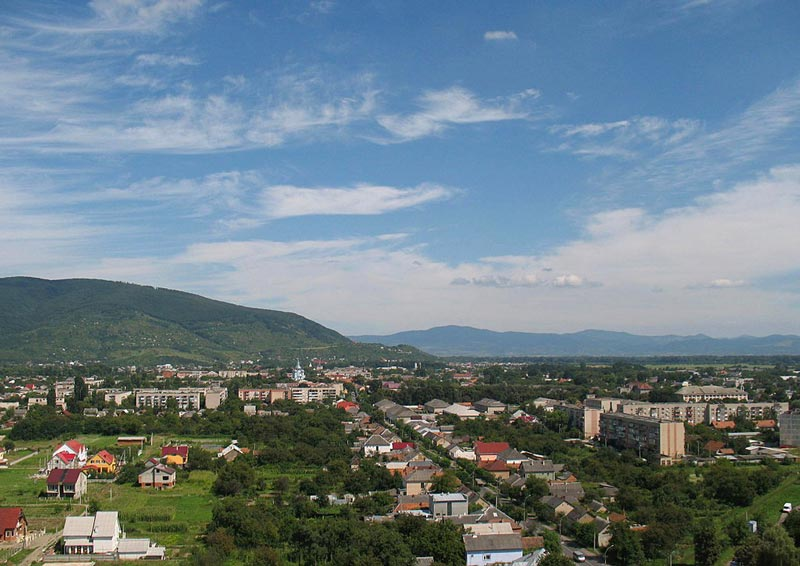
景点：乌戈萨城堡 乌戈萨城堡于1308年首次被提及，1315年，查尔斯•罗伯特国王进攻并摧毁了它。在15世纪，该地区被授予方济各会的僧侣，他们在那里建造了一座修道院，直到1558年以前一直有人居住。在遗址以南有一个14世纪的小教堂。 1315年，它被查尔斯•罗伯特国王围困并拆除。该地区在15世纪被授予方济各会主义者，他们在前城堡旁边建造了一座坚固的修道院。1558年人口减少。人们用印花布编织的粗糙服装为基础，将废墟称为坎科城堡。城堡遗址的南部是一个14世纪的小教堂。 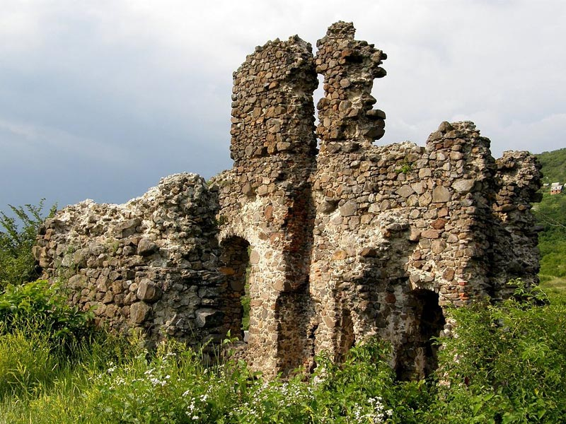
景点：佩雷尼城堡 佩雷尼城堡是由佩雷尼贵族家族于1399年建造的，后来以巴洛克风格重新建造为豪宅，成为现在的佩雷尼城堡。该城堡于1573年首次被提及，并在17和18世纪以巴洛克风格重建。
Ukraine: Off-the-map Experiences
Big, diverse and largely undiscovered, Ukraine is one of Europe’s last genuine travel frontiers, a nation rich in colourful tradition, warm-hearted people and off-the-map experiences. Let your adventures begin with one of the biggest countries in Europe…
时间
地点
景点（可以 +/- ）
入住地点
第一天
布达佩斯出发
330公里
乌日霍罗德
Uzhhorod
格拉茨艺术馆, 宫殿山, 格拉茨主广场, 格拉茨钟楼, Old Town of Graz, Island in the Mur
第二天
198公里
72公里
斯特瑞
Stryi
利沃夫
Lviv
斯特瑞: Cathedral of the Assumption
利沃夫: Beer Cultural Experience Center “Lvivarnya”, 圣乔治主教座堂, 道明会教堂, 国立利沃夫博物馆
第三天
利沃夫歌剧芭蕾舞剧院, 波托茨基宮, Stryiskyi Park公园, 亚美尼亚使徒教会利沃夫主教座堂
第四天
133公里
伊万诺-弗兰科夫斯克
Ivano-Frankivsk
Ivano-Frankivsʹka Ratusha文化博物馆, The Holy Resurrection Cathedral大教堂, Shevchenko park公园
第五天
165公里
库尼贡达湖
Synevyr
第六天
92公里到万诺赫尔迪夫
342公里到布达佩斯
万诺赫尔迪夫 Vynohradiv
Náměstí Míru 广场，National house of Vinohrady文化中心, 圣卢德米拉教堂, 布拉格电视塔
-
7天6夜克罗地亚、波黑小众
5天4夜波兰、斯洛伐克小众
四天三夜奥地利、斯洛文尼亚
匈牙利最大的滑雪场一日游
6天5夜，奥地利滑雪自由行
7天6夜，奥地利旅游滑雪自
4天3夜，奥地利滑雪自由行
斯洛伐克三日游（科希策
Copyright 2020 www.rrjourneys.com
人人游 旅游官方网站 版权所有 All Rights Reserved